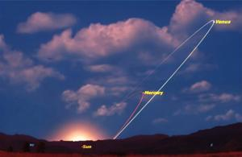

On mornings and evenings when Venus blazes high above the horizon, when the sky hasn't quite made up its mind between the deep dark of night and the optimistic glare of daytime, something special happens. For one thing, it is a beautiful sight. Everyone loves to see shining stars contrasted with a serene pastel backdrop, and at certain special times from our perspective, Venus is the brightest of them all. That's how the 'morning star' and 'evening star' got those nicknames, despite being a planet.
But there's an even more astounding aspect, and it is so obvious that it gets overlooked: It is possible to see actual astronomical sizes and distances that humans can comprehend. A real star, and a real planet, at an accurate distance apart.
You can see a real planet circling its star - to scale. You can actually see just how small a planet is compared to a star. You can see the distance a planet orbits from its star. Point to the Sun on the horizon and look up to Venus... "Oh, Venus is that far away from the Sun!?"

It's one thing to say the Moon is about 240,000 miles away, the Earth is 8000 miles across, and the Moon is about a quarter of that. But you can get a much better sense by physically holding a basketball (representing Earth) and have a friend stand 24 feet away and hold a tennis ball. Sizes in Space start to become a little more tangible.
The problem is that pictures in our grade school science books lied to us. They showed our entire solar system in one graphic that fits on a single page. They showed all the planets neatly lined up, parading away from The Sun at the edge. But if the radius of the solar system was illustrated to scale on a single page, the planets would be microscopic. And not toy-microscope size. Smaller than a period, smaller than an ameba, smaller than bacteria... so infinitesimal they're essentially invisible.
All-things astronomical are like this. Actually, most are much worse. There are stars so massive that if they were placed at the center of our solar system where the sun lives, Earth would orbit inside of it. Pluto is so far away from the Sun that the Sun looks like just a very bright star in Pluto's sky. Pictures of galaxies are gorgeous, but they give a false sense of size. These galaxies are a hundred thousand lightyears across! A number so big it doesn't mean anything. It can't. Our brains didn't evolve to understand such numbers. We simply can't grasp it.
But at particular times of the year with Venus, when the Earth and her are at just the right places, it is possible to see a part of the solar system in its entirety. Real Space, on display, in its raw and true form. No analogies or metaphors needed. No computer-generated graphics or artists' renditions. As the Sun peaks over the horizon, and Venus is shining high in the east on one of these gorgeous mornings, you're looking at a bonafide star and planet dancing together in the infinite abyss of Space.
There they are, twirling together in the nothing.
*All of this applies to Mercury as well. And there are times when both Venus and Mercury are on display at just the right angle from us when both planets put on this heavenly display making the scene even more detailed and awe-inspiring.
BONUS
Couple cell phone pics of the 2025 Jupiter / Venus conjuntion: